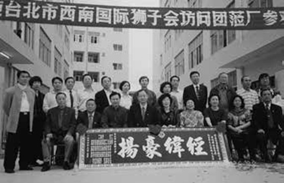
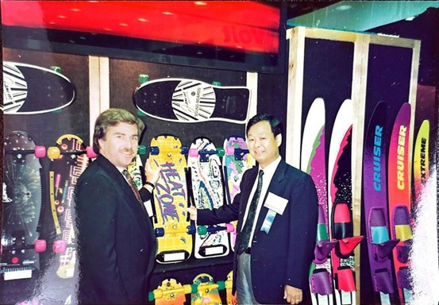
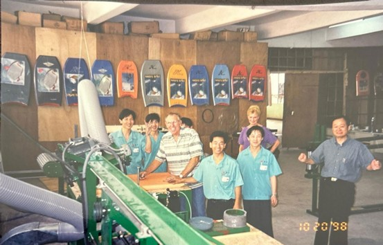
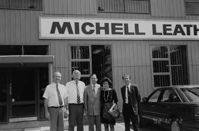
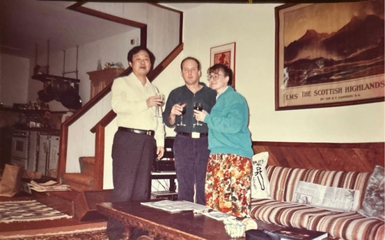
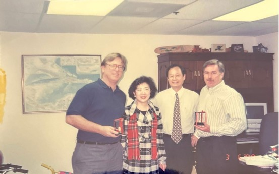
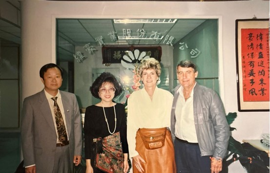
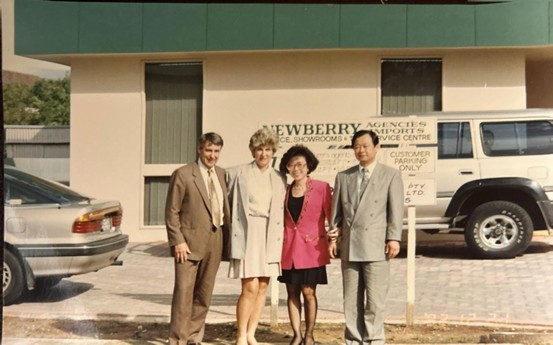
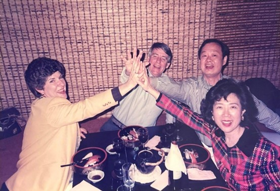

緯豪深圳工廠開業時，台北市西南國際獅子會組團來拜訪紀文豪，以表慶賀

紀文豪與Keith Parten合影於美國展場的攤位，圖中兩人一同手持自家滑溜板的展品。
1982年，緯豪實業股份有限公司成立，象徵事業體系開始朝向組織化與制度化發展。1987 年起，隨著全球產業分工與製造外移趨勢，事業正式西進中國，並於深圳設立生產基地，逐步建立跨製造網絡。此一布局不僅提升產能彈性，也使企業在成本競爭與供應鏈整合方面取得關鍵優勢， 成為日後國際化的重要基礎。

緯豪深圳工廠內部，紀文豪與身穿制服的工人們及合作夥伴Bart留影，圖中右一為紀文豪
1990年代，事業發展進入國際化階段。1990 年成立Wever USA Inc.，1992年成立澳洲投資公司，顯示經營策略已由單一製造導向，轉為結合海外投資與市場經營。1995年投入水上用品製造，1999年進一步跨足寵物用品市場，產品線逐步多元化，有效分散單一產業景氣循環風險，並提升整體營運穩定度。

一九九二年，紀文豪與眾人在澳洲最大的 皮革廠前合影，圖中由左至右依序為：皮革廠總經理、移民官Bob Brown、紀文豪、妻子劉柑柑、妻子的哥哥。

和紀文豪合作的外國人最欣賞的就是他的人品
2000年後，企業進入整合與擴張並行的發展期。折疊滑板車正式投產，並於淡水設立總部。同年成立 EzyDog 國際公司，以及澳洲與美國子公司，正式建構全球品牌體系。儘管期間遭逢全球金融海嘯，企業仍持續完成中國惠州工業用地購置與建廠計畫，顯示其經營思維以長期布局為主， 而非短期景氣操作。
2010年起，事業版圖延伸至不動產與資本投資領域，先後於日本與澳洲成立投資公司。2017年，EzyDog台灣公司與建設公司成立，並啟動首件住宅開發案。2022年，該住宅案完銷交屋，象徵 事業由製造、品牌經營，逐步邁向多元資產配置與穩定收益模式。至2025年，其事業體系已橫跨 製造、品牌、投資與不動產等領域，呈現長期規劃、穩健經營且持續演進的發展軌跡。




| Year | Event (Chinese) | Event (English) |
|---|---|---|
| 1974 | 商協工業有限公司成立 | Sunshine Industrial Co., Ltd. was established |
| 1974 | 第一次石油危機 | First Oil Crisis |
| 1977 | 錦豪實業有限公司成立 | Very Good Enterprise Co., Ltd. was established |
| 1979 | 第二次石油危機 | Second Oil Crisis |
| 1982 | 緯豪實業股份有限公司成立 | Wever Co., Ltd. was established |
| 1987 | 產業西進中國 | Moving to China |
| 1987 | 緯豪－中國深圳廠成立 | Wever's Shenzhen factory was established |
| 1990 | Wever USA Inc. 成立 | Wever USA Inc. was established |
| 1992 | Wever 澳淵投資公司成立 | Wever Australia Investment Co., Inc. was established |
| 1995 | 水上用品投產 | Started producing water sports accessories |
| 1999 | 寵物用品投產 | Started producing pet accessories |
| 2000 | 折疊滑板車投產 | Started producing foldable scooters |
| 2000 | 緯豪淡水總部成立 | Moved into Wever's new HQ in Tamsui |
| 2000 | EzyDog 國際公司成立 | EzyDog International Inc. was established |
| 2000 | EzyDog 澳洲公司成立 | EzyDog Australia Inc. was established |
| 2000 | EzyDog 美國公司成立 | EzyDog USA company was established |
| 2000 | 購置中國惠州工業用地約 54,000 ㎡ | Purchased ~54,000 m² industrial land in Huizhou, China |
| 2010 | 啟動日本房產租賃投資 | Started real estate investments in Japan |
| 2011 | 緯豪－中國惠州廠投產 | Wever's Huizhou China factory started operations |
| 2017 | EzyDog 台灣公司成立 | EzyDog Taiwan was established |
| 2017 | 緯豪建設有限公司成立 | Wever Construction Co., Ltd. was established |
| 2017 | 美國加州聖伯納迪諾郡台灣辦事處成立 | San Bernardino County Office opened |
| 2017 | 首案「名山水岸」開工 | "Bali Pinnacle Living" started construction |
| 2020 | COVID-19 | COVID-19 Pandemic |
| 2020 | 日本紀氏投資公司成立 | Kee Investment Co., Ltd. in Japan was established |
| 2021 | 澳洲紀氏投資公司成立 | Kee Investment Co., Ltd. in Australia was established |
| 2021 | 名緯實業有限公司成立 | Keewe Co. Ltd. was established |
| 2022 | 首案「名山水岸」完銷交屋 | "Bali Pinnacle Living" was completely sold and delivered |